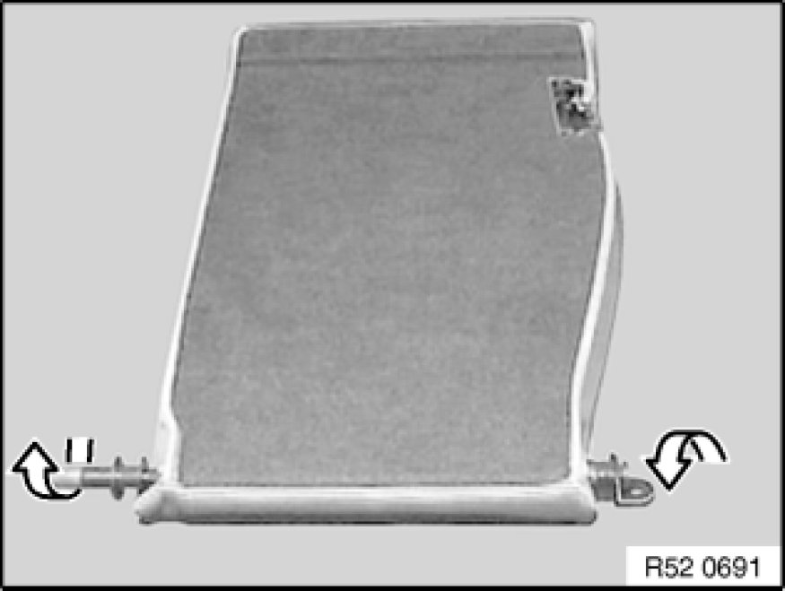
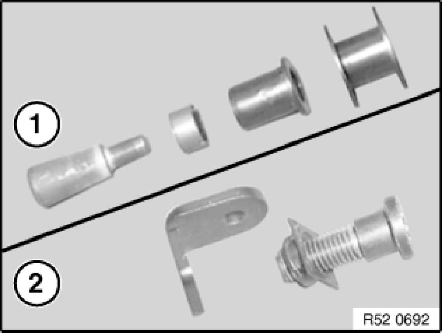
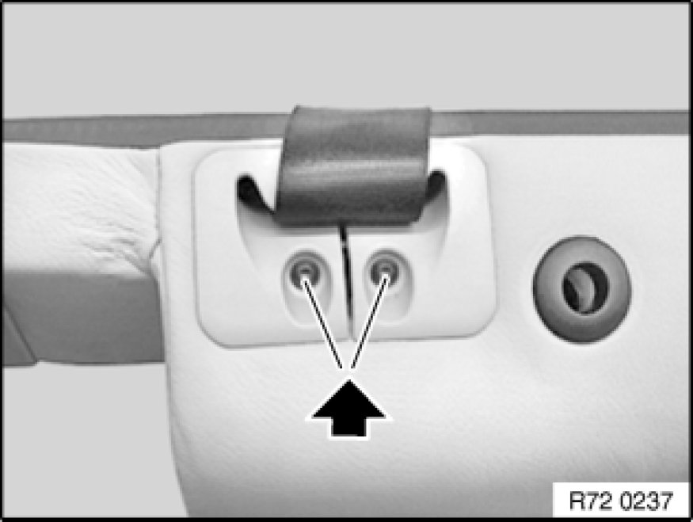
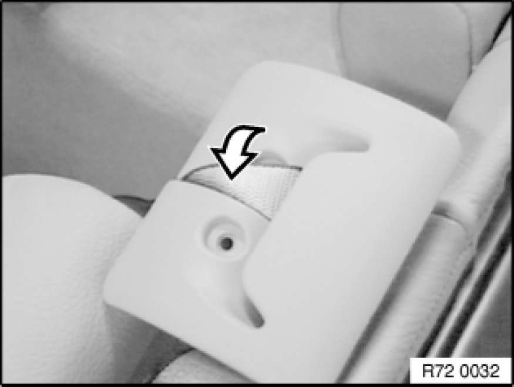
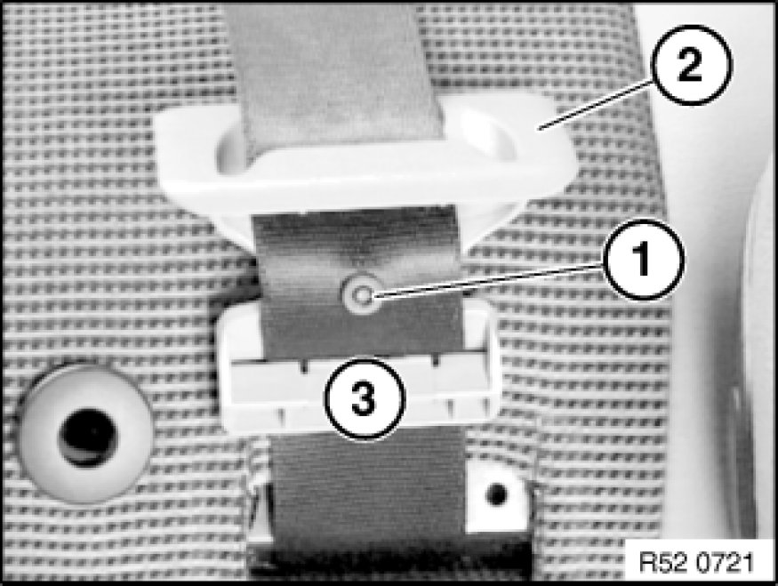
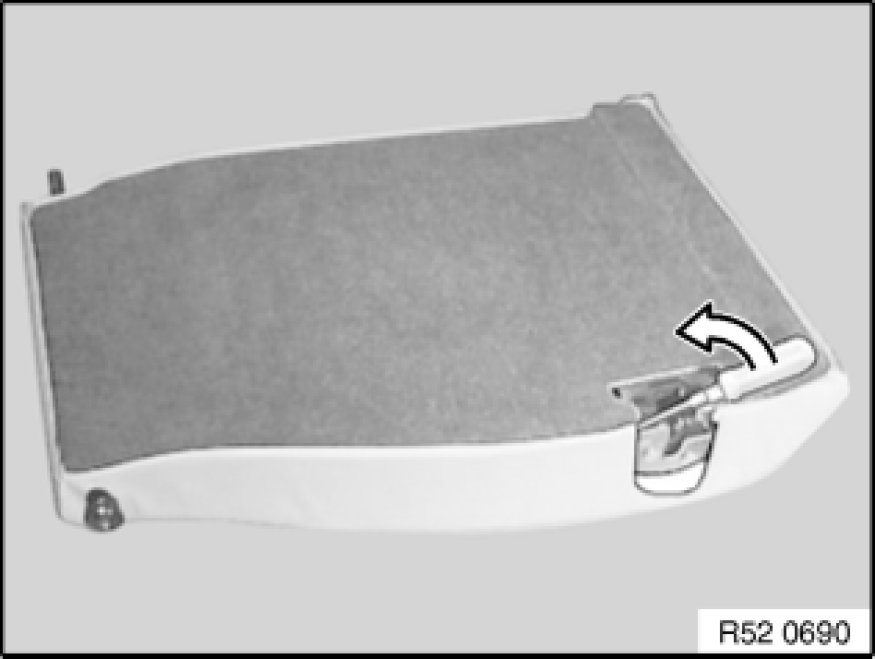
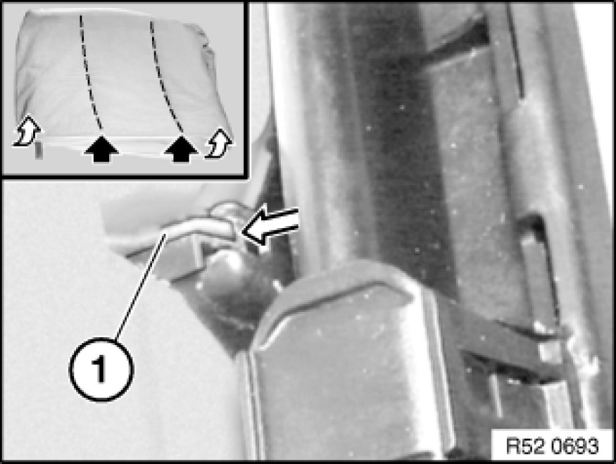
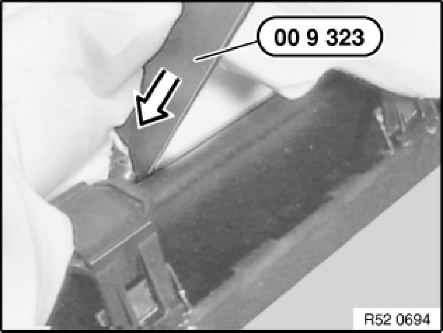
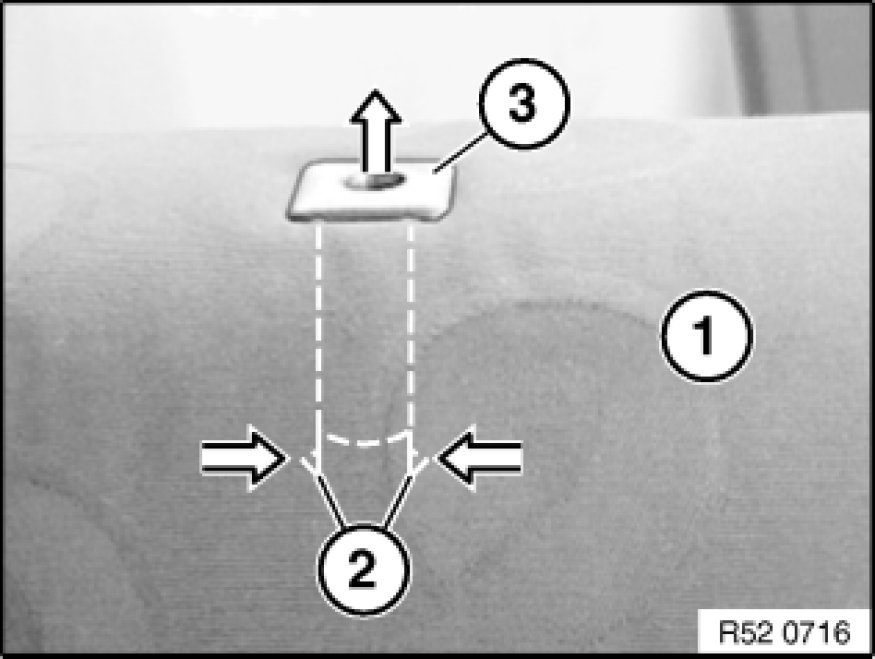
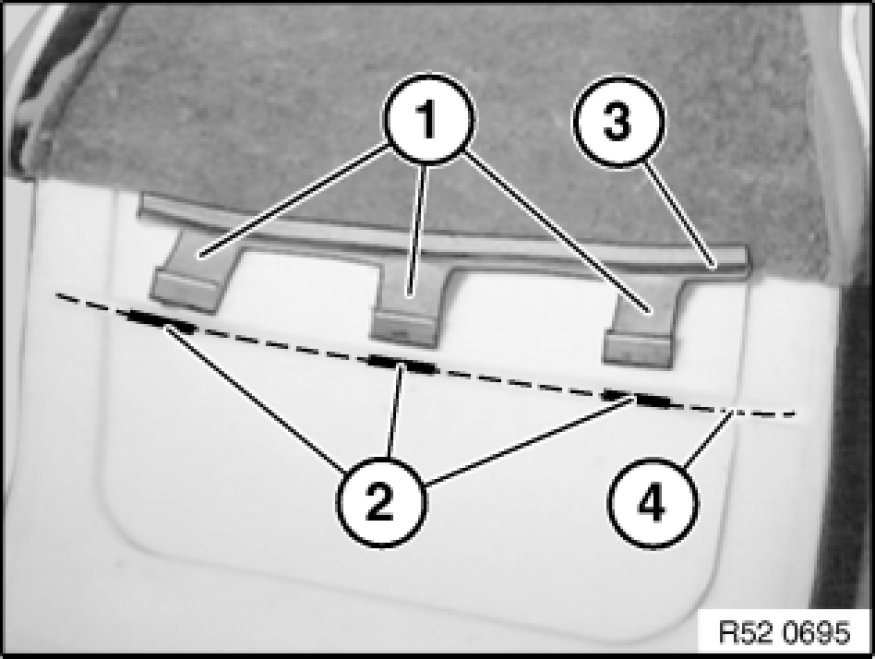

Replacing Backrest Cover for Right Rear Seat (Through-Loading System)
52 26 412 - Replacing backrest cover for right rear seat (through-loading system)

Special tools required:
- 00 9 317 00 9 317 Trim Panel Wedge
- 00 9 323 00 9 323 Cleaning Wedge (Scraper)
Necessary preliminary tasks:
- Remove and install left rear seat Rear Seat, Through-Loading (through-loading).
- Remove and install rear head restraints Removing and Installing/Replacing Rear Head Restraint (Through-Loading System), Left or Right (Compact).
- Remove backrest Removing and Installing/Replacing Left or Right Rear Seat Backrest (Through-Loading System) for rear seat (through-loading system).
- Remove actuator trim Removing and Installing/Replacing Actuating Mechanism for Left Rear Seat Backrest (Through-Loading System) for left rear seat.
- Remove lock trim Removing and Installing/Replacing Lock for Left Rear Seat Backrest (Through-Loading System)

Release mounting for center and outer mounts.

Installation:
Installation sequence for mounting kit for center mount (1) and outer mount (2).

Move backrest into installation position and pull out belt slightly. Clamp belt firmly.
E46 only:
Unfasten screws.
Remove trim.
E83 only:
Trim not screwed down.
Lever out trim with special tool 00 9 317 00 9 317 Trim Panel Wedge.

Separate webbing.

Installation Note:
Feed out strap so that belt stopper (1) is located between upper guide (2) and lower guide (3) of belt finisher.

Lever out cover all round.

Carefully pull cover over mounts towards front.
Slide all cover lugs (1) in succession in direction of backrest center (if necessary with cleaning wedge 00 9 323).

Installation:
Press tabs with special tool 00 9 323 00 9 323 Cleaning Wedge (Scraper) into mounting on both sides.

Grip lower cover (1) and padding and gently press clips (2) together, pull out head restraint guide (3).
Remove cover and padding.
Installation Note:
Clips of head restraint guide (2) must not be damaged.

Replacement of backrest cover or padding only:
Pull cover out of padding.
Installation Note:
Feed cover lugs (1) into openings of padding (2). Make sure piping (3) is resting in opening of padding (4).